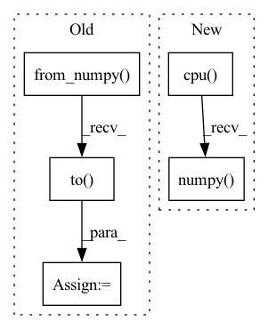

Pattern ID :22146
Before Change
if seg_model is not None:
seg_model.eval()
with torch.no_grad():
x_tensor = torch.from_numpy(image).to( DEVICE) .unsqueeze(0)
print(x_tensor.shape)
pr_mask = seg_model.predict(x_tensor)
pr_mask = pr_mask.argmax(dim=1).squeeze().cpu().numpy().astype("uint8")
save_vis(After Change
image, gt_mask = dataset[n]
image_vis = image.permute((1, 2, 0)).cpu().numpy().astype("uint8")
gt_mask_vis = gt_mask.squeeze().cpu().numpy() .astype("uint8")
if seg_model is not None:
seg_model.eval()In pattern: SUPERPATTERN
Frequency: 3
Non-data size: 5
Instances Fragment ID: 70168575
Project Name: ais-bonn/vp-suite
Commit Name: e8b74aea072bfc2c6f36278093202f5b017967f0
Time: 2021-07-15
Author: boltres@ais.uni-bonn.de
File Name: visualize.py
M Class Name: AnonimousClass
N Class Name: AnonimousClass
M Method Name: visualize(3)
N Method Name: visualize(2)
M Parent Class:
N Parent Class:
M File Name: visualize.py
N File Name: visualize.py
M Start Line: 16
M End Line: 25
N Start Line: 10
N End Line: 23
Before Change
SAR_out[m] = SAR[m + (dum, p_opt)]
p_opts[m] = p_opt
p_opts = pt.from_numpy(p_opts).to( SDR_out.device)
return SDR_out, SIR_out, SAR_out, p_opts
def _linear_sum_assignment_with_inf(After Change
args[i] = arg.transpose(-2, -1)
loss_mat_npy = loss_mat.cpu().detach().numpy()
loss_out = loss_mat.new_zeros(b_shape + (n_chan_out,))
args_out = [arg.new_zeros(b_shape + (n_chan_out,)) for arg in args]
Fragment ID: 70168578
Project Name: fakufaku/torchiva
Commit Name: d2b2bceef6944715a6274920e6ec7b0374367ccd
Time: 2022-01-31
Author: robin.scheibler@linecorp.com
File Name: torchiva/metrics.py
M Class Name: AnonimousClass
N Class Name: AnonimousClass
M Method Name: _solve_permutation(1)
N Method Name: _solve_permutation(3)
M Parent Class:
N Parent Class:
M File Name: torchiva/metrics.py
N File Name: torchiva/metrics.py
M Start Line: 204
M End Line: 234
N Start Line: 150
N End Line: 182
Before Change
sample = self.samples[:,self.last_added_ind-1]
sample_gpu = torch.from_numpy(sample).to(device=device)
x_gpu = torch.from_numpy(x).to(device=device)
diff_gpu = x_gpu - sample_gpu
dist_to_last_added = torch.norm(diff_gpu)
self.distances[0,self.last_added_ind-1] = 0 // will be set exactly below
After Change
// selection to return
indx = (self.distances <= self.radius).cpu().numpy()
n_x = self.samples[:,indx[0,:]]
n_data = self.data[indx[:]]
return [n_x,n_data,computed] Fragment ID: 70168576
Project Name: sun-umn/pygranso
Commit Name: e6eaf9a3e06081f72c5e065a9f7b637f84ee2fdd
Time: 2021-09-09
Author: 52502144+Buyun-Liang@users.noreply.github.com
File Name: private/neighborhoodCache.py
M Class Name: nC
N Class Name: nC
M Method Name: getCachedNeighborhoodAbout(3)
N Method Name: getCachedNeighborhoodAbout(3)
M Parent Class:
N Parent Class:
M File Name: private/neighborhoodCache.py
N File Name: private/neighborhoodCache.py
M Start Line: 51
M End Line: 93
N Start Line: 52
N End Line: 95